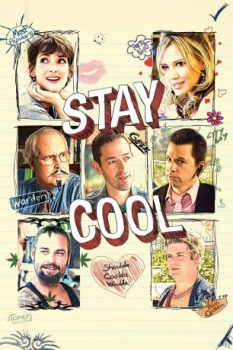

E Se o Amor Acontece... (2011)


Shoulda. Coulda. Woulda.

Avaliação (TMDb):


5.0/10 (35 votos)
Avaliação (Usuário):
Outro Título:Stay Cool
País:United States, 94 minutos
Idiomas falados:Inglês, Português
Gênero(s):Comédia
Diretor(s):Michael Polish
Codec:MPEG-2 (DVD)
Número: 1270
Sinopse:
Renomado Escritor volta à sua terra natal para preparar o discurso de formatura de sua antiga escola, ao chegar lá percebe que tem que lidar com antigos sentimentos e enfrentar novas situações.
Elenco:
Chevy Chase, Hilary Duff, Max Thieriot, Winona Ryder, Sean Astin, Mark Polish, Jon Cryer, Marc Blucas, Josh Holloway, Joanna Cassidy
Tipo de mídia: DVD5,
Legendas: Inglês, Português
Alugado: Não
Tela: 2.35:1